Working with Browser Events
What is an event
An event is like an announcement. When an event happens, the browser will make an "accouncement" and we can use JavaScript to listen for and respond to the "announcement".
Seeing an Event
Chrome browser has a special monitorEvents() function that will let us see different events as they occur.
The monitorEvents() function will keep spitting out all events happening on the targeted element until the page is refreshed (or closed). Alternatively, Chrome does offer a function, .unmonitorEvents() that will turn off announcing events for the targeted element.
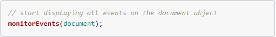 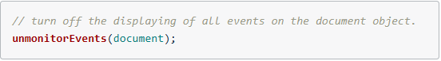Note: monitorEvents() is used for development/testing purposes and is not intended for production.
Event Targets
The Node Interface inherits from the EventTarget Interface
(See 'Document Object Model' notes for information on Node Interface and Element Interface)

EventTarget is an interface implemented by objects that can receive events and may have listeners for them
------------------and------------------
Element, document, and window are the most common event targets, but other objects can be event targets too.
Source: MDN EventTarget Page
The EventTarget is at the top of the chain. This means that it does not inherit any properties or methods from other interfaces;
however, every other interface inherits from it and therefore contain its properties and methods.
This means each of the following is an "event target":
- The document page
- A paragraph element
- A video element
- etc...
Both the document object and any DOM element can be an event target because they inherit from the EventTarget Interface.
individual element > inherits from > Element Interface > inherits from > EventTarget Interface
document object > inherits from > Document Interface > inherits from > EventTarget Interface
EventTarget Interface does not have any properties and only three methods:
- .addEventListener()
- .removeEventListener()
- .dispatchEvent()
Listening for Events
psuedo-code to explain .addEventListener:
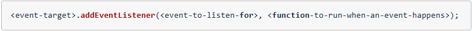An event listener needs three things:
- an event target - this is called the target
- the type of event to listen for - this is called the type
- a function to run when the event occurs - this is called the listener
The <event-target> (the target) goes right back to document object, a <p> element, etc...
The <function-to-run-when-an-event-happens (the listener) is a function to run when the event actually occurs.
event listener from pseudo-code earlier to a real example:
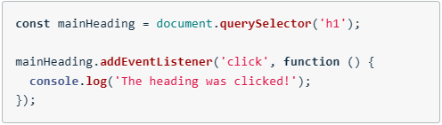- the target is the first <h1> element on the page
- the event type to listen for is a "click" event
- The listener is a function that logs to console: "The heading was clicked!"
Add an Event Listener
Project starter code: https://github.com/udacity/course-JS-and-the-DOM
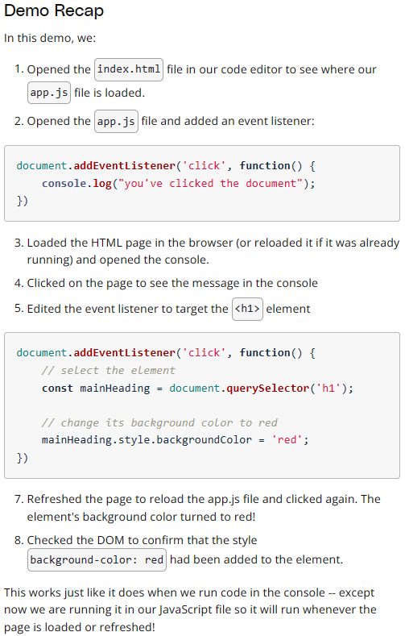More Events to Listen To
There is a full list of all possible events to listen for: MDN Event Reference
Removing an Event Listener
The .addEventListener() event will listen for and respond to all click events.
The new version of .addEventListener() specification does allow for an object to be passed as a third parameter.
This object may be used to configure how .addEventListener() method behaves.
There is an option to listen for a single event; however, this configuration object is not widely supported yet.
psuedo-code to explain .removeEventListenter():
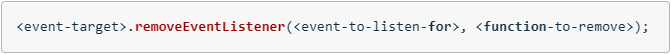Remember, the listener function must be the exact same function as the one used in the .addEventListener() call, not just an identical looking function.
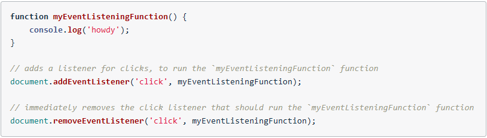This works because .addEventListener() and .removeEventListener():
- have the same target
- have the same type
- and pass the exact same listener
An exmaple of using .removeEventListener() incorrectly:
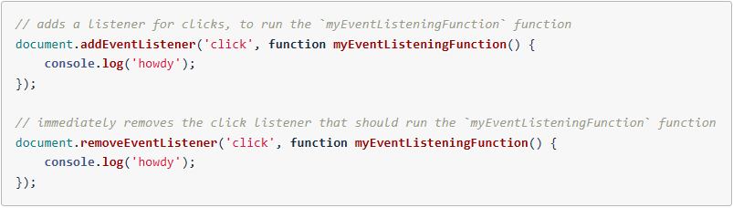Why does this NOT work:
- both .addEventListener() and .removeEventListener() have the same target
- both .addEventListener() and .removeEventListener() have the same type
- .addEventListener() and .removeEventListener() have their own distint listener funtions... They do not refer to the exact same function (This is the reason the event listener removal fails)
Two functions can look the same, but live in two different places in memory.
When writing code: "..., function myEventListeningFunction() {...});", the second function was stored in a different location in memory. This is similar to a resturant chain; If you place an order at one pizza place, and drive to a different pizza place instead of the one you ordered from, they will not have your order available.
Event Phases
There are three different event phases during the event's lifecycle. The phases occur in order:
- the capturing phase
- the at target phase
- the bublling phase
Most event handlers run during at target phase. The event arrives at the button (its target), and there's only a handler for it right there, so the event handler gets run.
Sometimes there's a collection of items -- such as a list -- and want to have ONE handler cover every item (and still have the option of individual handlers for some items). By default, if clicking on a child item while the handler doesn't intercept the click, the event will "bubble" upward to the parent, and keep bubbling until something handles it or it hits the document.
The capturing phase lets the parent intercept an event before it reaches a child.
Eent Firing Order
- Clicking on the event starts the capturing phase at the html tag, working its way down to the element that was clicked.
- When it reached the element that was clicked, it's in the target phase .
- Then it switches to the bubbling phase and works its way back to the htmltag.
Which Phase is Used?
There's a third argument used with .addEventListener():
- type
- listener
- useCapture or capturing
By default, when .addEventListener() is called with only two arguments, the method defaults to using the bubbling phase.
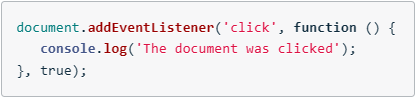The true parameter at the end of the .addEventListener() method makes the event respond in the capturing phase.
The Event Object
When an event occurs, the browser includes an event object.
This is a JavaScripts object that includes information about the event itself.
According to MDN, the .addEventListener()'s listener receives:
a notification (an object that implements the Event Interface) when an event of the specified type occurs
Adding a parameter to the .addEventListener() so we can store this event object
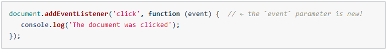Note: There is nothing special about the parameter name (event). The parameter is just a variable and, therefore, may be whatever makes sense.
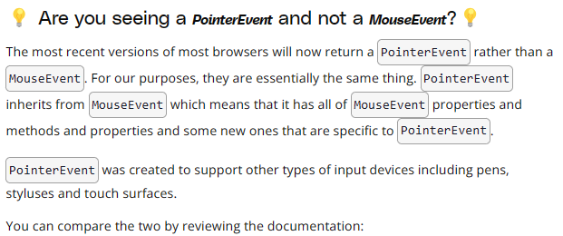Event Delegation
The event object has a .target property. This property references the target of the event. This is where capturing, target, and bubbling phases become more important and useful
The process when clicking on a paragraph element:
- A paragraph element is clicked
- The event goes through the paturing phase
- It reaches the target
- It switches to the bubbling phase and starts going up the DOM tree
- When it hits the <div> element, it runs the listener function
- Inside the listener function, event.target is the element that was clicked
event.target gives us direct access to the paragraph element that was clicked. Because we have access to the element directly, we can access its .textContent, modify its styles, update the classes it has, etc... (anything we want/need to do really).
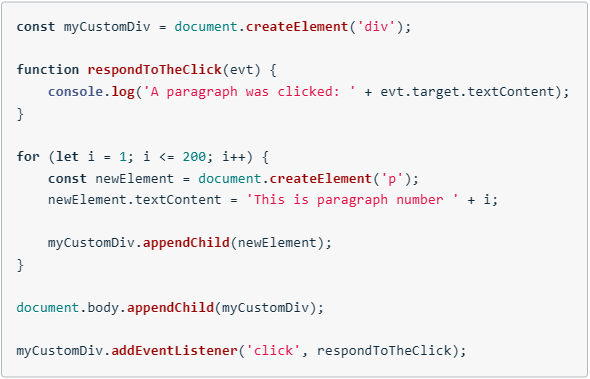The DOM is Built Incrementally
When the parser gets to a <script> tag, it must wiat to download the script file and execute that JavaScript code.
JavaScript file should be placed at the bottom of the HTML so the DOM may build all elements first. If JS runs before the DOM has a chance to build all the elements, querySelector will run into issues because the DOM does have a query to select yet.
The alternative would be to use browser events; DOMContentLoaded
The DOMContentLoaded Event
The DOMContentLoaded event will fire when the DOM has fully loaded. It can be listened the same way other events are listened for:
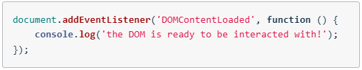Because of the DOMContentLoaded event, we can use it to keep our JS code in the <head> of the HTML page instead of the bottom.
The DOMContentLoaded event will prevent the DOM code from running when the browser gets to it.
Then the event will fire; After the DOM has been constructed.
There is a load event, but this takes longer; It waits for all images, stylesheets, etc... to load.
Even though DOMContentLoaded can fix the issue of having JS in the <head>, it does mean more code which usually isn't the best way to do something. It is better to put the JS code at the bottom of the HTML file just BEFORE the closing </body> tag.
It can be good to use JS in the <head> of the HTML and use DOMContentLoaded when you have JavaScript code that needs to run as soon as possible. This way it'll run as early as possible, but not too early that the DOM isn't ready for it.